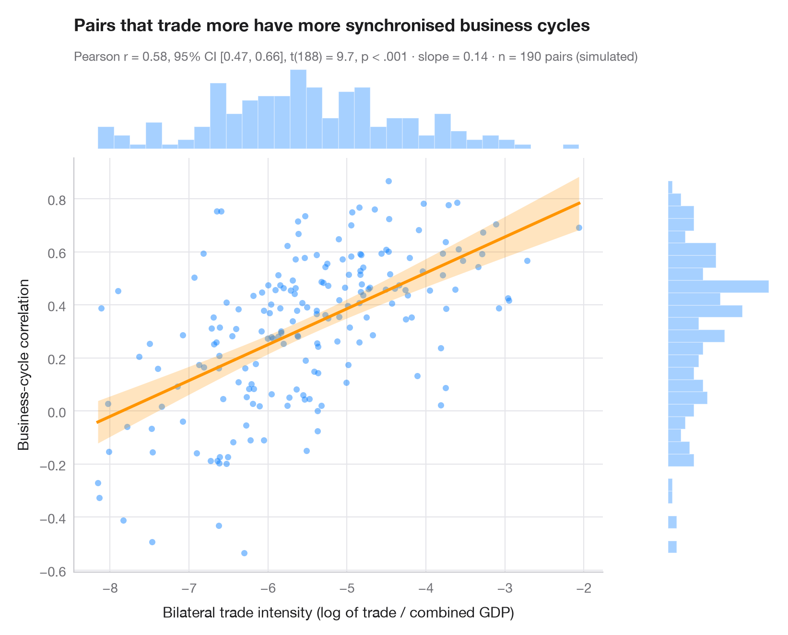

附统计量的散点图
散点、OLS 回归线及 95% 置信带和边际直方图，副标题给出 Pearson r。

ggscatterstats() 的 Python 版本。中央面板展示所有观测值，以及最小二乘回归线和其 95% 置信带（反映的是每个 x 处 y 均值的不确定性，而非单个数据点的不确定性）。上方和右侧的边际直方图揭示了每个变量的分布形态——相关系数默认这一形态是合理的。副标题报告 Pearson r 及其 95% 置信区间、t 检验和样本量。
数据为 scikit-learn 自带的糖尿病研究（load_diabetes(scaled=False)）：442 名患者的体重指数与一年后疾病进展的定量指标。检验由 scipy.stats.pearsonr 完成，回归线和置信带来自 statsmodels OLS 的 get_prediction().conf_int()。
代码及图中文字均为英文。
import matplotlib.pyplot as plt
import numpy as np
import statsmodels.api as sm
from scipy import stats
from sklearn.datasets import load_diabetes
# Data: BMI and disease progression for 442 diabetes patients
data = load_diabetes(as_frame=True, scaled=False).frame
x, y = data["bmi"].to_numpy(), data["target"].to_numpy()
n = len(x)
# Pearson correlation with its 95% CI
res = stats.pearsonr(x, y)
ci = res.confidence_interval(0.95)
# OLS fit and 95% confidence band for the mean
fit = sm.OLS(y, sm.add_constant(x)).fit()
grid = np.linspace(x.min(), x.max(), 200)
band = fit.get_prediction(sm.add_constant(grid)).conf_int(alpha=0.05)
fig = plt.figure(figsize=(8, 6.4))
gs = fig.add_gridspec(2, 2, width_ratios=(5, 1), height_ratios=(1, 5), wspace=0.03, hspace=0.03)
ax = fig.add_subplot(gs[1, 0])
ax_top = fig.add_subplot(gs[0, 0], sharex=ax)
ax_right = fig.add_subplot(gs[1, 1], sharey=ax)
ax.scatter(x, y, s=22, color="#007AFF", alpha=0.45, lw=0)
ax.fill_between(grid, band[:, 0], band[:, 1], color="#FF9500", alpha=0.25, lw=0)
ax.plot(grid, fit.params[0] + fit.params[1] * grid, color="#FF9500", lw=2.2)
ax.set_xlabel("Body-mass index (kg/m²)")
ax.set_ylabel("Disease progression after one year")
ax.grid(axis="x")
# Marginal histograms
ax_top.hist(x, bins=30, color="#007AFF", alpha=0.35, edgecolor="white")
ax_right.hist(y, bins=30, color="#007AFF", alpha=0.35, edgecolor="white", orientation="horizontal")
for a in (ax_top, ax_right):
a.axis("off")
ax_top.set_title("Heavier patients progress faster", pad=26)
p_txt = "p < .001" if res.pvalue < 0.001 else f"p = {res.pvalue:.3f}"
ax_top.text(0, 1.06, f"Pearson r = {res.statistic:.2f}, 95% CI [{ci.low:.2f}, {ci.high:.2f}], "
f"t({n - 2}) = {fit.tvalues[1]:.1f}, {p_txt} · n = {n}",
transform=ax_top.transAxes, fontsize=9.5, color="#6E6E73")
plt.show()
图表使用了可选的 PyStatlas 样式：添加 plt.style.use("pystatlas.mplstyle") 即可完全还原其外观。
如何引用
PyStatlas 由 Thierry Warin 创建并维护。如果它对你的工作有所帮助，敬请引用。
Warin, T. (2026). Scatterplot with statistics. In PyStatlas: The Python Gallery of Statistical Graphics. https://warint.github.io/pystatlas/correlation/scatter-with-stats/
@misc{warin2026statlas,
author = {Warin, Thierry},
title = {PyStatlas: The Python Gallery of Statistical Graphics},
year = {2026},
howpublished = {\url{https://warint.github.io/pystatlas/}},
note = {Source code: https://github.com/warint/pystatlas}
}